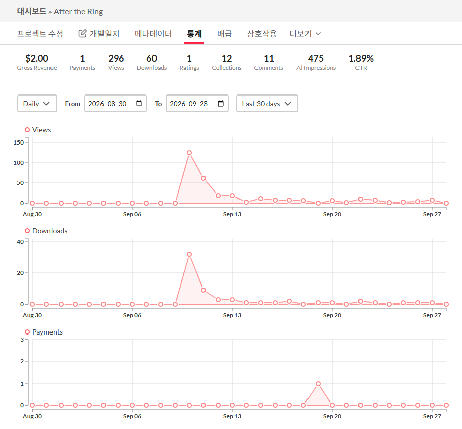
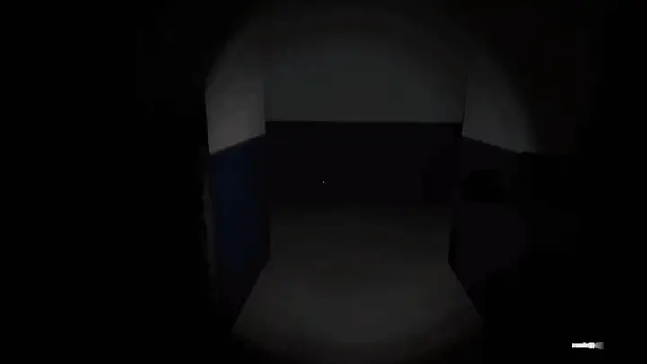
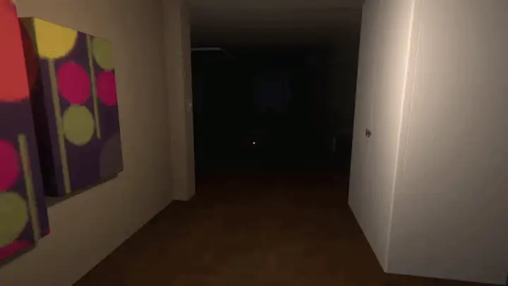
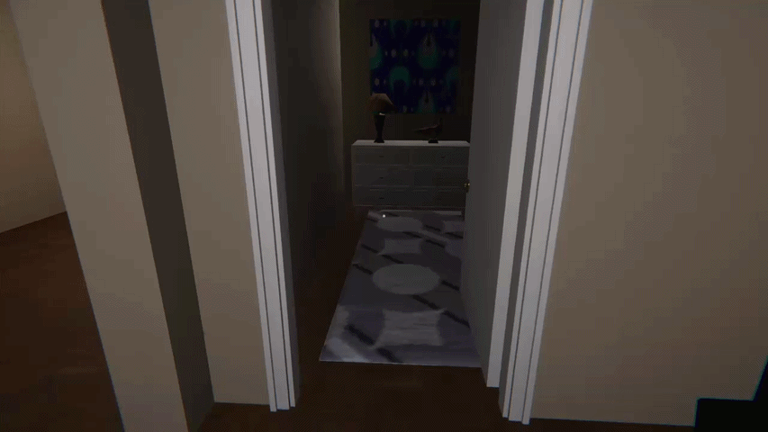
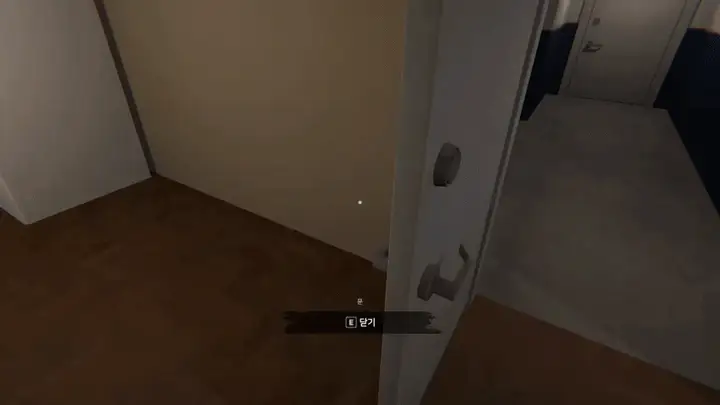
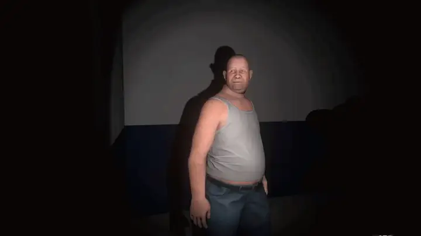
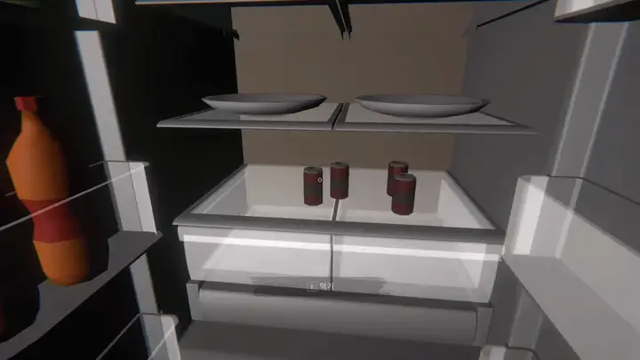

1인 개인 프로젝트 · itch.io 출시
After the Ring
UHFPS 프레임워크 위에서 만든 1인 공포 게임. 프레임워크 원본은 한 곳만 고치고, 필요한 기믹은 기존 이벤트를 구독하는 독립 C# 컴포넌트로 확장했습니다.
- 기간
- 약 3주 (2026.08.19 ~ 09.10)
- 인원 · 역할
- 1인 · 기획, 맵, 연출, 프로그래밍 전체
- 기술
- Unity 6 · C# · UHFPS · UniTask · DOTween · Odin Inspector
- 기여 규모
- 커밋 91개 · 직접 작성 스크립트 17개, 약 1,500줄 · 7개 언어 현지화
- 링크
- itch.io에서 플레이트레일러GitHub

1. 이 프로젝트로 보여 드리는 것
| 강점 | 근거 | 결과 |
|---|---|---|
| 고칠 것과 확장할 것을 구분한다 | 프레임워크 원본 수정은 Objective 완료 처리 1곳으로 한정하고 수정 위치에 // [ENZEUN 추가] 표시. 나머지는 이벤트를 구독하는 독립 컴포넌트 | 프레임워크를 업데이트할 때 충돌하는 지점이 한 곳뿐 |
| 기믹을 코드 없이 조립하게 한다 | 런타임 이벤트 바인더 5종: 중복 바인딩 방지, 일회성 실행, 파괴 시 해제 | 문·아이템·조명·목표·암전을 인스펙터에서 연결해 연출 제작 |
| 비동기 연출을 하나의 시퀀스로 다룬다 | 자막·암전·텔레포트를 UniTask로 연결, 코루틴 0개, 파괴 시 취소 토큰 | 입력 잠금과 해제까지 포함한 연출 흐름 |
| 출시까지 완성한다 | 1인으로 기획부터 빌드, 7개 언어 현지화, 빌드 크기 분석 도구 제작 | itch.io 출시 |
2. 구조
- UHFPS 컴포넌트문 · 아이템 · 조명 · 목표
- 런타임 이벤트 바인더 5종기존 이벤트에 붙였다 뗌
- UnityEvent인스펙터에서 연결
- 연출 컴포넌트자막 · 암전 · 텔레포트 · 문 잠금
UHFPS의 인스펙터 이벤트 연결만으로는 "특정 시점에만 반응"하는 기믹을 만들 수 없어서, 중간에 런타임 바인딩 계층을 두었습니다. 연출 컴포넌트끼리는 서로를 직접 참조하지 않습니다.
3. 핵심 구현
① 런타임 이벤트 바인딩
- 문제
- UHFPS는 인스펙터 기반 이벤트 연결만 지원해서, "이 자막이 끝난 뒤 문을 열면" 같은 조건부 반응을 만들기 어려웠습니다.
- 판단
- 원본 컴포넌트를 고치지 않고, 기존 이벤트에 런타임에 리스너를 붙였다 떼는 바인더를 따로 둡니다.
- 결과
- 바인더 5종이 같은 규칙을 따릅니다.
isBound로 중복 바인딩을 막고,triggerOnce면 한 번 실행 후 스스로 해제하며, 바인딩된 채로 파괴되면OnDestroy에서 해제합니다.
| 컴포넌트 | 바인딩 대상 |
|---|---|
DynamicObjectEventBinder | 문 Open / Close / Locked |
InteractableItemRuntimeEventBinder | Take / Examine Start / Examine End |
InteractableLightRuntimeEventBinder | Light On / Off |
ObjectiveCompleteRuntimeBinder | Objective Complete |
EyeBlinkEventBinder | Eyes Close / Open |
코드 — DynamicObjectEventBinder
public void BindOpen()
{
if (target == null || isBound)
return;
isBound = true;
target.useEvent1.AddListener(HandleOpen);
}
private void HandleOpen()
{
OnOpen?.Invoke();
if (triggerOnce)
{
target.useEvent1.RemoveListener(HandleOpen);
isBound = false;
}
}
// 바인딩된 상태로 파괴되면 target 에 리스너가 남으므로 해제
private void OnDestroy()
{
RemoveBoundEvent();
}
② 자막 시스템
SubtitleAsset(SO, 현지화 문자열과 표시 시간) →SubtitleTrigger(자막 목록, 시작 전후 대기, 이동·시점 잠금, 종료 이벤트) →SubtitleManager(표시 연출)- DOTween
DOText를 UniTask로 기다려 자막을 순서대로 재생하고, 오브젝트가 파괴되면 취소 토큰으로 중단합니다. - 입력 잠금은 try/finally로 감싸서, 정상 종료든 취소든 반드시 풀리게 했습니다.

③ 암전 연출과 텔레포트
- EyeBlinkController: UHFPS의 EyeBlink 포스트 프로세스 볼륨을 제어해 눈 감기 → 유지 → 눈 뜨기를 구현했습니다. 평소에는 컴포넌트를 꺼서
Update비용이 없고, 연출이 끝나면 스스로 꺼집니다. OnEyesClosed/OnEyesOpened이벤트로, 시야가 가려진 순간에 다음 로직(텔레포트)이 실행되도록 분리했습니다.- Teleport: 요청(
TeleportTrigger)과 처리(TeleportManager)를 나누고, 이동 중에는DragRigidbody를 꺼서 물리 간섭으로 위치가 틀어지지 않게 했습니다.

④ 이벤트 후 문을 닫고 잠그기
문이 열려 있으면 닫힘 애니메이션 종료 이벤트를 한 번만 구독한 뒤 문을 닫고, 닫힘이 끝나면 잠근 다음 OnFinished로 다음 이벤트를 연결합니다. 애니메이션이 끝나기 전에 잠기는 문제와 리스너 중복 등록을 막았습니다.

⑤ NPC 시선 제어
NPC 정면과 플레이어 방향 사이의 수평 각도를 계산해, 시야각(70°) 안에 들어오면 LookAtConstraint.weight를 0 → 1로 보간합니다. 강제 weight 모드를 두어, 연출 중 갑자기 고개를 돌리는 공포 연출에 활용했습니다.

4. 트러블슈팅
Objective 완료가 중복으로 발생

- 원인
- 완료 처리 과정에 Objective / SubObjective의 완료 상태 검증이 없었습니다.
- 해결
- 완료 상태를 먼저 확인해 건너뛰고, 전체 SubObjective가 완료되었을 때만 완료 이벤트를 발생시킵니다.
- 판단
- 상태 검증은
ObjectiveManager내부 처리 순서 안에 있어야 해서, 이 프로젝트에서 유일하게 원본을 직접 수정했습니다. 수정 위치 4곳에// [ENZEUN 추가]주석을 남겨, 프레임워크를 업데이트할 때 추적할 수 있게 했습니다.
if (data.IsCompleted.Value) return; // [ENZEUN 추가] 완료된 목표는 건너뛰기
...
if (subData.IsCompleted.Value) continue; // [ENZEUN 추가] 이미 완료된 세부 목표 건너뛰기자막과 다른 시스템의 입력 상태 충돌
- 현상
- 아이템 살펴보기(Examine)가 끝나자마자 자막이 시작되면, 자막이 건 입력 잠금이 풀려 버렸습니다.
- 원인
- 여러 시스템이 같은 플레이어 입력 상태를 따로 바꾸면서, 실행 순서에 따라 Examine 종료의 "잠금 해제"가 자막의 "잠금"을 덮어썼습니다.
- 해결
- 프레임워크의 입력 제어는 건드리지 않고, 자막 시작을
UniTask.Delay로 늦춰 실행 순서를 분리했습니다. - 판단
- 근본 해결이 아닌 임시 해결임을 알고 선택했습니다. 출시 일정 안에서 프레임워크의 입력 구조를 바꾸는 위험이 더 컸습니다.
5. 한계와 회고
- 입력 잠금의 주인이 없음: 여러 시스템이 입력을 잠그고 푸는 구조는 그대로이고, 지금은 실행 시점만 나눠 두었습니다. 다음에는 잠금 요청을 우선순위와 함께 모아 한 곳에서 판정하는 구조로 바꾸겠습니다.
- 사후 코드 재검토: 포트폴리오를 정리하며 다시 읽어 보니, 바인더가 파괴될 때 리스너를 해제하지 않고 있었고, 자막 도중 오브젝트가 파괴되면 입력이 잠긴 채 남을 수 있었습니다.
OnDestroy해제와 try/finally로 수정했고, "등록한 곳에는 반드시 해제가 있는가"를 리뷰 체크 항목에 추가했습니다.